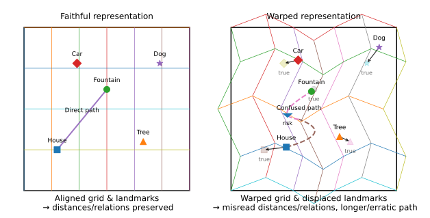
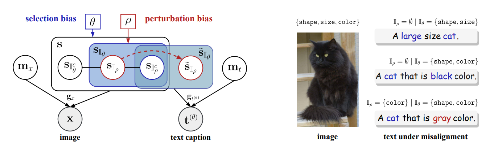
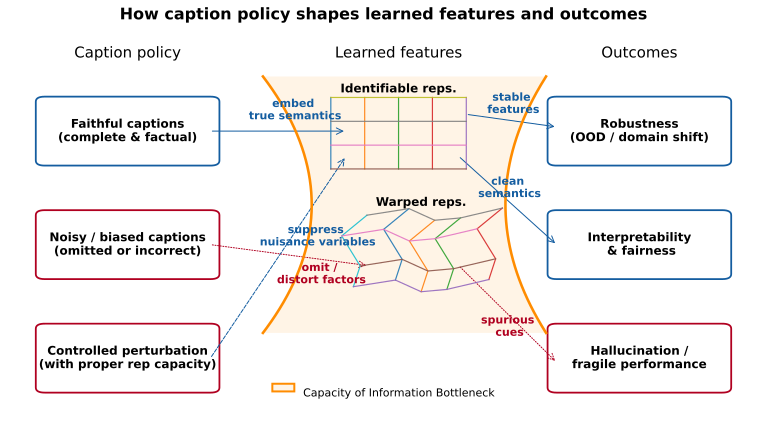

The Underexplored in Representation Learning: Why We Need to Rethink It #
Modern AI models are rightly celebrated for astonishing successes, but their “almost right” failures tell another story: a captioning model dogmatically names a non-existent object; a classifier swaps “wolf” for “husky” whenever snow appears; a vision-language model hallucinates relationships. These errors rarely break benchmarks, yet they reveal warped internal maps, features that fail to reflect the factual world.
Scaling data and compute alone does not guarantee faithful representations. When features silently entangle or omit critical semantic information, interpretability, fairness, and robustness all suffer. To build responsible, resource-efficient AI, we need identifiable representations: latent features that correspond uniquely and stably to real-world factors.

Identifiable Representation Learning: What It Means and Why It Matters #
By identifiability we mean: given enough data and reasonable assumptions (i.e., a belief about how data are generated from latent factors of variation), the learned features recover the true latent factors, such as identity, shape, color, pose, up to at most trivial ambiguities.
Why this matters:
- Interpretability & Fairness: Stable embedding coordinates (or neurons) let researchers and auditors see what is encoded and surface biases to be challenged.
- Robustness: Features do not drift when style, lighting, or domains shift.
- Resource Savings: Stable, semantic features reduce expensive retraining and data collection.
Because identifiable features don't drift, teams spend less on re-training/data; audits are simpler (fairness); and feature meanings remain stable (interpretability).
Our Route: Language as an Inductive Cue and Its Challenges #
Achieving identifiability comes with caveats. There are many ways to compress data; pretext tasks, learning objectives, model capacity, optimization dynamics, and dataset properties all shape the optimization landscape and thus the learned representations. Different research threads emphasize different levers; we focus on the data. We center our attention on data because, regardless of the algorithm, knowledge originates there.
In particular, we value language as an inductive cue for learning representations from unstructured modalities such as images. Natural language, invented by humans and carrying our culture and concepts, provides a practical semantic scaffold. Using text as guidance is compelling, witness the strong organization of visual features in CLIP-style models. Yet CLIP-based features have well-documented issues: hallucinations and vulnerability to spurious cues. Moreover, many modern vision-language systems (e.g., LLaVA-style VLMs, MLLMs, and text-to-image generators) build upon CLIP encoders and can inherit these weaknesses.
Our Endeavors So Far: Modeling Caption Noise in Training Data and Its Consequences #
Motivation #
Large-scale multimodal learning (with language as an auxiliary modality) often relies on web-scale image-caption corpora. These data are noisy: captions omit details or misdescribe them. In our NeurIPS 2025 paper, we asked: Can we model these noise patterns formally? And: When are such misalignments harmful, and when can they be harnessed for robustness?
Theory Claims #
We formalize image-text generation with shared semantic factors plus modality-specific noise. Two biases characterize text-caption misalignment: selection bias (captions omit factors) and perturbation bias (captions randomly misdescribe factors).

Theorem 4.1 (informal): Contrastive multimodal learning identifies only the unbiased semantic subset shared across modalities; omitted or corrupted factors are excluded under appropriately constrained representation dimensionality, and modality-specific noise is discarded, regardless of latent causal dependencies.
Intuitively, contrastive models can only align what both views consistently share. Missing or stochastically perturbed details are not learned, even when they matter in the world. Furthermore, if dimensionality is over-generous and effective sparsity is absent, the extra capacity may inadvertently encode non-identifiable, noisy information.
Key Insights for Practice #
This yields two practical insights:
- Faithful captions for coverage: In large-scale pretraining, hallucinations arise when models infer semantics that captions omit or distort; key semantics may be missing. Faithful captions are essential because foundation models prioritize generalization and reuse. With sufficiently broad coverage, test cases remain largely in-distribution; otherwise the model embeds non-factual or noisy signals, causing non-identifiability and downstream hallucinations. In large-scale contrastive pretraining, missing/perturbed semantics ⇒ non-identifiability (the non-faithfully captioned component semantics) ⇒ hallucination risk; targeted omissions of nuisance factors.
- Controlled misalignment for robustness: Deliberately altering vulnerable components (e.g., style cues) can teach the model to ignore nuisance factors, signals we do not want the model to rely on due to spurious correlations or insufficient environmental diversity. (See our ECCV 2024 paper for a concrete demonstration of this strategy.)

Experiments & Evidence #
- Simulations: Perfect recovery of unbiased semantics; omitted or perturbed factors are unrecoverable.
- Controlled image-text data: Empirical confirmation of block identifiability even with dependencies among factors.
- OpenCLIP case study: Concepts rarely mentioned in captions, indicative of selection bias, are poorly represented; headline accuracy can hide warped semantics. Mild misalignments keep top-line performance stable while distorting the latent map; our model predicts these effects.

Closing Call to Action #
Identifiability is not optional; it is the bedrock of reliable and interpretable AI systems. Our NeurIPS 2025 work, alongside related efforts in this area, aims to provide a compass for researchers and practitioners. Audit your data for biases, use language guidance thoughtfully, and explore controlled misalignment for robustness. Cite, extend, or challenge our results, help keep the internal maps of future AI systems true to the world they navigate.
@inproceedings{cai2025misalignment,
title = {On the Value of Cross-Modal Misalignment in Multimodal Representation Learning},
author = {Cai, Yichao and Liu, Yuhang and Gao, Erdun and Jiang, Tianjiao and Zhang, Zhen and van den Hengel, Anton and Shi, Javen Qinfeng},
booktitle = {Advances in Neural Information Processing Systems (NeurIPS)},
year = {2025}
}